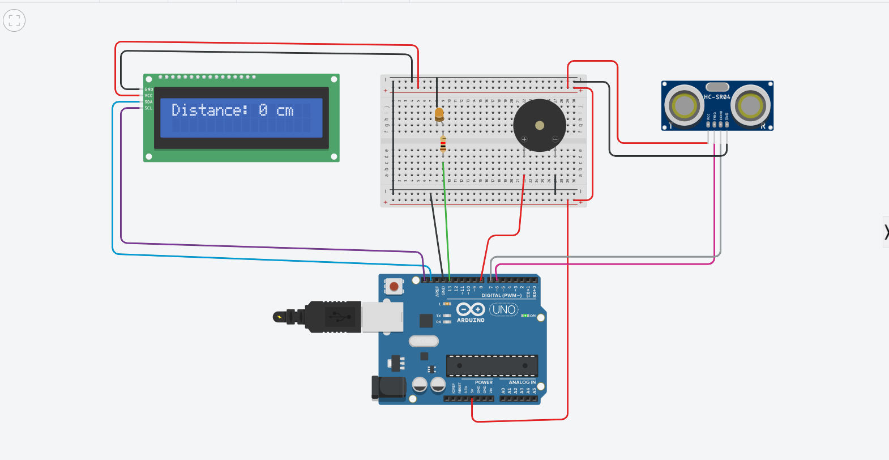

🔌 Day 2: Introduction to Tinkercad & First Circuit Design Simulation
🧭 Overview
On the second day, we explored practical skills by working with Tinkercad, an online simulation platform used for designing and testing electronic circuits.
🛠 Introduction to Tinkercad
We were introduced to the features and capabilities of Tinkercad, including:
- Creating and managing projects
- Using electronic components (LEDs, resistors, Arduino, etc.)
- Building circuits in a virtual environment
- Running simulations in real time
⚡ First Circuit Design
We designed and simulated our first electronic circuit.
Activities performed:
- Connecting basic components such as LEDs and resistors
- Using Arduino for control
- Writing and uploading code
- Running simulation to test functionality
💡 Sample Arduino Code
// Simple LED Blink Program int led = 13;
void setup() { pinMode(led, OUTPUT); }
void loop() { digitalWrite(led, HIGH); delay(1000); digitalWrite(led, LOW); delay(1000); }
🖼 First Circuit Design Preview
Below is the first circuit we designed and simulated using Tinkercad:
